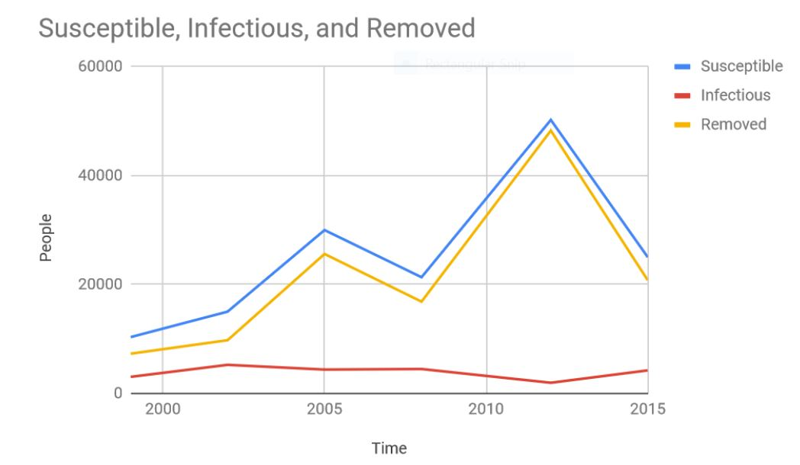

Pertussis is a highly contagious bacterial disease that is very common in infants and children. It’s spread from person to person through contact with fluids from an infected person’s mouth or nose. When infected, bacteria called Bordetella Pertussis attach to and line the upper respiratory system. Symptoms include a severe cough and fever; It’s also common to vomit due to coughing fits.
Though the numbers of Pertussis cases seen has dropped drastically since vaccines became available, the disease is still alive and spreading. Many adults think that the disease is irrelvant making them less likely to get themsleves and their children vaccined. In a survey done by the American Academy Of Family Physicians, it was discovered that 61% of patients weren't even aware that there was a vaccine available for Pertussis.
There are two types of vaccines to prevent Pertussis. The first is called DTaP and is given to children who are 7 years or younger. At age 11, a booster shot called TDaP is given to keep the patient protected for the rest of their lives.
If preventive measures aren't taken and a person is infected, they can take a course of antibiotics prescribed by a doctor to get rid of the infection in their body.